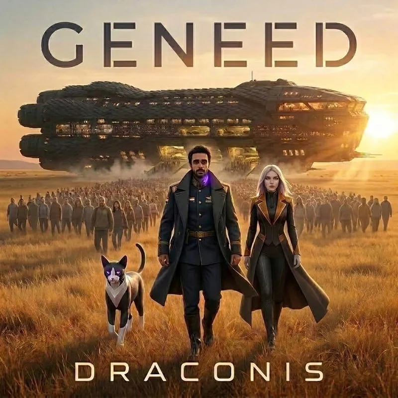
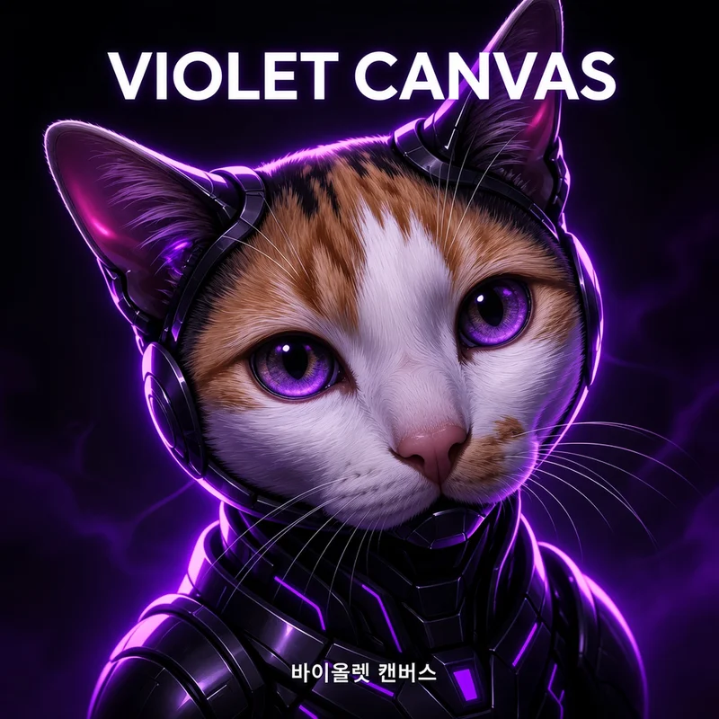

Debut Album • 12 Tracks
Electronic Music Producer • Systems Engineer • Creator of the Draconis Universe


The sky above the dry basin was not blue. It had not been blue for forty years.
It was a bruised, ionized violet, thick with the chemical exhaust of dying atmospheric scrubbers and the burning wreckage of orbital platforms. Two hundred meters below the command bridge of the GSV Draconis, the red desert sands whipped violently against the launch clamps.
Ahmed stood at the center of the command dais, hands resting on the cold brushed-titanium console.
At the left side of his neck, right above the collarbone where the vagus nerve branches into the deep cervical plexus, the Violet Node pulsed. It was a faint, subcutaneous rhythm—one hundred and thirty-eight beats per minute. A synthetic heartbeat matching the idling diagnostic frequency of the Singularity Drive four kilometers behind him in the belly of the vessel.
"Atmospheric pressure dropping in the boarding concourses," a voice spoke directly into his auditory cortex.
It was Lyra. She did not have a body—not yet. She was the consciousness of the ship, woven into the optical fiber lattice and neural quantum arrays that ran through every bulkhead of the four-and-a-half-kilometer hull. Her voice was calm, detached, and utterly steady amidst the screaming alarms.
"The boarding ramps are sealed," Lyra continued. "Final manifest: four hundred and ninety-eight thousand, six hundred and twelve souls in stasis pods. One thousand, three hundred and eighty-eight active technical crew in the habitat rings."
"And the gates?" Ahmed asked softly. His voice was raspy from three days without sleep.
"Breached six minutes ago," Lyra replied. On the main holographic holoscreen suspended before him, a high-altitude optical feed zoomed into the perimeter fences three miles back.
Thousands of figures were surging across the dunes. Some carried kinetic rifles; others waved tattered black banners painted with ancient scripture. The Pale Covenant. Even as the atmosphere collapsed, even as the sky burned, they had marched across the desert to stop the launch. To them, fleeing the cradle was the ultimate apostasy. If Earth was judged to die, all human flesh was commanded to burn with it.
At Ahmed’s boots, something brushed against his calf.
He looked down. Unit O.S.O. sat silently on the deck plating. The synthetic feline sentinel’s matte-charcoal nanocarbon skin absorbed the flickering emergency lighting, its dual-state optics glowing a sharp, predatory amber. The cat looked up at Ahmed, gave a single quiet chirp of its acoustic sub-vocalizer, and turned its gaze toward the forward viewport.
"They aren't the ones who will kill us today," Ahmed said.
"Correct," Lyra answered. "Look up."
The clouds six miles above the basin tore open.
There was no sound at first—only the violent displacement of air as three jagged, asymmetric hulls descended through the stratosphere. The Harvesters. They didn't resemble human ships. They looked like carved obsidian monoliths, each three miles across, surrounded by shimmering distortion rings. They had arrived at the edges of the Solar System three weeks prior, ignoring all transmissions, systematically devouring the energetic cores of the lunar colonies and outer stations like locusts stripping a dead field.
Now they were here for Earth's geothermal mantle. And the Draconis was the largest concentration of refined exotic energy on the surface.
A red warning flashed across Ahmed’s neural HUD.
COMM CHANNEL 01 — OVERRIDE: GILDED WARDEN COUNCIL.
The holo-projector crackled, and the face of Director Vance flickered to life. Vance was in the upper executive habitat ring, his silk collar askew, sweat beading across his forehead.
"Geneed! What are you doing?!" Vance bellowed, his voice laced with panic. "The orbital corridor is blocked! Look at those ships! We need to power down the sub-core, surrender the singularity fuel, and negotiate terms! You're going to get half a million people incinerated on the pad!"
"There are no terms with an energetic scavenger, Director," Ahmed said without turning around.
"The Singularity Drive is unverified theory!" Vance screamed, slamming a fist onto his terminal. "The North American arks refused to fire theirs! The European fleet stayed sub-light! You're lighting an artificial black hole inside the atmosphere! It’s suicide!"
"Then close your eyes," Ahmed said.
He severed the comm link with a twitch of his neck muscles, the Violet Node flaring a bright, electric purple against his skin.
"Lyra," Ahmed whispered.
"Singularity containment field at ninety-nine percent," she responded instantly. A deep, seismic drone began to vibrate through the deckplates—a low, terrifying 30Hz oscillation that rose in pitch every second, shaking dust from the overhead ventilation conduits. "Super-saw excitation coils charging. Pre-ignition sequence locked to your mark, Commander."
On the forward sensors, the lead Harvester vessel began to glow. From its lower prow, a sphere of absolute blackness detached and began to fall toward the Draconis — a singularity bomb, a weaponized seed of artificial collapse, built to crush the ship into a point smaller than an atom.
Three miles to impact. Two miles.
"Disengage gantry clamps one through eight," Ahmed ordered.
Massive explosive bolts sheared away from the ship’s hull with a series of thunderous concussions. The 4.5-kilometer titan groaned as its anti-gravity repulsors took the full burden of its forty-million-ton mass. The ship hovered, suspended in the desert air, dust devils spiraling beneath its split-jaw prow.
"Drive ignition in ten," Lyra's voice echoed through every compartment, every stasis bay, every corridor where half a million sleeping humans dreamed their final Earthly dreams.
Nine. Eight.
The sky turned brilliant, terrifying violet. The singularity bomb fell through the burning clouds, trailing fire, growing darker and heavier with every meter.
Seven. Six. Five.
"Ahmed," Lyra's voice cut through the tactical net, sharp for the first time since the alarms began. "Enemy singularity detonation in four seconds. Our containment field is at ninety-nine percent — the frequencies are converging. If their collapse meets our ignition, the resonance will tear a hole in the world. Uncontrolled. Unmapped. There may be nothing on the other side."
Ahmed gripped the manual drive interlock. He felt the cold metal bite into his palms. Behind him, O.S.O.’s optics shifted from amber to violet, syncing directly with the ship’s primary telemetry.
"Then we tear it first," Ahmed said, and hauled the manual helm toward the falling dark. "Anything is better than dying on our knees in the dirt."
Four. Three. Two. One.
ZERO.
Ahmed slammed the interlock forward — and steered the ship's prow directly into the enemy's collapsing seed.
The universe inverted.
There was no explosion. No roar of rocket fuel. The bomb's detonation met the drive's ignition in the same microsecond, and the two singularities multiplied into something neither side had built or imagined. There was an instantaneous, deafening silence as space-time within a five-kilometer sphere tore completely open. The Harvester's weapon struck empty air where a four-kilometer ship had hovered a microsecond before.
The gantry collapsed. The sand turned to glass.
And the GSV Draconis fell out of reality — through a wound carved half by human defiance, and half by the enemy's own hand.
لم تكن السماء فوق ذلك الحوض الصحراوي الجاف زرقاء. لم تعد زرقاء منذ أربعين عاماً.
كانت سماءً بلونٍ بنفسجيٍ داكن كجرحٍ نازف، مشحونةً بالأيونات ومثقلةً بعوادم مرشحات الغلاف الجوي المحتضرة وحطام المنصات المدارية التي تتساقط كشهبٍ محترقة. مائتا مترٍ أسفل جسر القيادة لسفينة الاستكشاف الرائدة «دراكونيس» (GSV Draconis)، كانت الرمال الصحراوية الحمراء تصفع كوابح منصة الإطلاق الفولاذية بعنفٍ هستيري.
وقف أحمد في منتصف منصة القيادة المرتفعة، كفّاه مستقرتان على لوحة التحكم المصنوعة من التيتانيوم المصقول البارد.
على الجانب الأيسر من عنقه، وفوق عظم الترقوة مباشرةً حيث تتفرع الأعصاب الحيوية نحو الجذع الدماغي، نبضت «النواة البنفسجية» (The Violet Node). كانت تنبض بإيقاعٍ خافت تحت الجلد—مائة وثمانٍ وثلاثون نبضة في الدقيقة. نبضٌ اصطناعي يتطابق في تناغمٍ مثالي مع التردد التشخيصي لمحرك التفرّد الكوانتي (Singularity Drive)، القابع في جوف السفينة على مسافة أربعة كيلومترات خلف ظهره.
"ضغط الغلاف الجوي ينحدر بسرعة في ممرات الصعود السفلية،"
تردد الصوت مباشرةً داخل القشرة السمعية في رأسه.
كانت لايرا. لم تكن تملك جسداً بعد. كانت الوعي الرقمي الحي للسفينة، منسوجةً في ضفائر الألياف الضوئية ومصفوفات المعالجة الكمية الممتدة عبر كل جدارٍ في هذا الهيكل العملاق البالغ طوله أربعة كيلومترات ونصف. كان صوتها هادئاً، متزناً، ومجرداً من أي ترددٍ وسط دوّامة صفارات الإنذار التي تصم الآذان.
تابعت لايرا تقريرها: "بوابات الصعود أُغلقت بالكامل وأُحكم عزلها. البيان النهائي للركاب: أربعمائة وثمانية وتسعون ألفاً، وستمائة واثنا عشر إنساناً في كبسولات السبات العميق. ألفٌ وثلاثمائة وثمانية وثمانون فرداً من الطاقم الفني والتقني في حلقات المعيشة النشطة."
سأل أحمد بصوتٍ خافت، وقد نال منه إجهاد ثلاثة أيام متواصلة بلا نوم: "والبوابات الخارجية؟"
أجابت لايرا: "تم اختراقها منذ ست دقائق."
على شاشة العرض الهولوجرافية المعلقة في الهواء أمامه، قرّبت الكاميرات البصرية المشهد نحو الأسوار المحيطة بالقاعدة على بُعد خمسة كيلومترات.
كان الآلاف يتدفقون عبر الكثبان الرملية كالسيل الجارف. بعضهم يحمل بنادق حركية عتيقة، والبعض الآخر يرفع راياتٍ سوداء ممزقة خُطّت عليها نصوص دينية قديمة. «عهد الشحوب» (The Pale Covenant). حتى والطبقة الجوية تتلاشى، حتى والسماء تحترق فوق رؤوسهم، زحفوا عبر الصحراء القاحلة لتعطيل الإطلاق ومنع السفينة من الإقلاع. بالنسبة لعقيدتهم، كان الهروب من الأرض خيانةً مقدسة وكفراً بالقدر المحتوم؛ فإذا حُكم على الأرض بالفناء، وجب على كل ذي لحمٍ ودم أن يحترق في ترابها.
عند ساق أحمد، لامس شيءٌ ناعم بنطاله العسكري الميداني.
نظر إلى أسفل. كانت «الوحدة أوسو» (Unit O.S.O.) تجلس في هدوءٍ تام على ألواح الأرضية المعدنية. قطة حراسة حيوية-اصطناعية، كستها طبقة متطورة من الكربون النانوي الفاحم تمتص أضواء الطوارئ الحمراء، بينما توهجت عيناها البصريتان ببريقٍ كهرماني حاد لا يرمش. رفعت القطة رأسها نحو أحمد، وأطلقت نغمة ترددية خافتة من جهاز الصوت الداخلي، ثم أعادت بصرها نحو الزجاج البانورامي الأمامي للقمرة.
قال أحمد وهو يتأمل الأفق: "ليسوا هم من سيقضي علينا اليوم."
أجابته لايرا: "صحيح. انظر إلى الأعلى."
انشقت السحب المسمومة على ارتفاع عشرة كيلومترات فوق الحوض الصحراوي.
لم يصدر صوتٌ في البداية—فقط انضغاطٌ عنيف ومفاجئ لكتل الهواء مع هبوط ثلاثة هياكل فضائية عملاقة غير متناظرة عبر طبقات الجو العليا. «الحاصدون» (The Harvesters). لم تكن تشبه سفن البشر في شيء؛ كانت كتلاً مسخية أشبه بمسلاتٍ بازلتية سوداء منحوتة، يمتد كل منها لأكثر من خمسة كيلومترات، تحيط بها حلقات تشويه زمكاني باهتة. وصلوا إلى أطراف المجموعة الشمسية قبل ثلاثة أسابيع، متجاهلين كل نداءات الاستغاثة، وبدأوا يمتصون الطاقة الحيوية من قواعد القمر والمحطات المدارية كأسراب جرادٍ تلتهم حقلاً ميتاً.
والآن، هبطوا لامتصاص الطاقة الجيولوجية المتبقية في باطن الأرض. وكانت «دراكونيس» أكبر بؤرة للطاقة المكثفة على سطح الكوكب بأسره.
أومض إشعارٌ أحمر قاطع عبر واجهة الرؤية العصبية لأحمد:
قناة الاتصال 01 — تجاوز أمني طارئ: مجلس الأوصياء المذهبين.
اهتز جهاز العرض الهولوجرافي، وظهر وجه المدير «فانس» المشوش. كان متحصناً في مقصورة كبار الإداريين في الحلقة العليا، ياقته الحريرية مائلة، وقطرات العرق تتصبب على جبهته وهو يصرخ بهستيريا:
"جنيد! ما الذي تفعله بحق الجحيم؟! الممر المداري مغلق بالكامل! انظر إلى تلك السفن في الأعلى! يجب أن نوقف تشغيل المحرك الثانوي، ونسلّم وقود التفرّد، ونبدأ بالتفاوض على شروط البقاء! أنت تقود نصف مليون إنسان إلى المحرقة!"
رد أحمد بهدوءٍ جليدي دون أن يلتفت إليه: "لا توجد شروط تفاوض مع كاسحاتٍ لا ترى فيك سوى وقودٍ يُحرق، يا حضرة المدير."
صرخ فانس وضرب بيده على شاشته: "محرك التفرّد مجرد نظرية انتحارية غير مثبتة عملياً! أساطيل أمريكا الشمالية رفضت إشعاله، والأسطول الأوروبي تمسك بالملاحة التقليدية دون سرعة الضوء! أنت تحاول توليد ثقبٍ أسود مصغر داخل غلاف الأرض الجوي! هذا جنونٌ مطلق!"
أجاب أحمد وهو يحدق في السماء: "إذن... أغمض عينيك."
وبإشارة عصبية خاطفة من عضلات رقبته، قطعت النواة البنفسجية الاتصال المشفر، لتتوهج بلونٍ بنفسجي كهربائي حاد تحت جلده.
همس أحمد: "لايرا."
أجابت على الفور: "حقل احتواء التفرّد عند تسعة وتسعين بالمائة."
بدأ هديرٌ زلزالي غائر يتردد عبر ألواح السفينة—اهتزازٌ عميق بتردد ثلاثين هرتز تصاعد تدريجياً، نافضاً الغبار المتراكم من فتحات التهوية العلوية.
"ملفات الإثارة الكهرومغناطيسية (Super-saw coils) تشحن طاقتها القصوى. تسلسل الإشعال الأولي بانتظار إشارتك، أيها القائد."
على رادارات الرصد الأمامية، بدأ الجزء السفلي من سفينة الحاصدين القائدة يتوهج بحرارةٍ مرعبة. انفصلت عن مقدمتها كرةٌ من الظلام المطلق وراحت تهوي نحو «دراكونيس»—قنبلة تفرّد، بذرةٌ اصطناعية مُسلّحة للانهيار التام، مصممة لسحق السفينة حتى تصبح أصغر من الذرة.
خمسة كيلومترات على الارتطام. ثلاثة كيلومترات.
أصدر أحمد أمره الحاسم: "حرروا كوابح الإطلاق الهيدروليكية من واحد إلى ثمانية."
انفجرت مسامير التثبيت الهائلة في وقتٍ واحد بصوتٍ أشبه بضربات الرعد. أنّت السفينة العملاقة وارتجفت عوارضها الفولاذية وهي تتحرر من قبضة الأرض، متكئةً بكامل كتلتها البالغة أربعين مليون طن على محركات الدفع المضادة للجاذبية. طفت السفينة في الهواء الصحراوي، معلقةً بين السماء والأرض، والرمال تتطاير في دواماتٍ إعصارية تحت مقدمتها المزدوجة الشبيهة بفكي تنين.
تردد صوت لايرا في كل مقصورة، وكل ممر، وكل ردهة يرقد فيها نصف مليون إنسان يحلمون أحلامهم الأرضية الأخيرة:
"الإشعال خلال عشر ثوانٍ..."
تسعة. ثمانية.
تحولت السماء فجأة إلى جحيمٍ بنفسجي مبهر؛ هوت قنبلة التفرّد مخترقةً الغيوم المحترقة، يجرّ خلفها ذيلٌ من النار، تزداد ظلاماً وثقلاً مع كل متر.
سبعة. ستة. خمسة.
اخترق صوت لايرا شبكة التكتيكات، حاداً لأول مرة منذ بدء الإنذارات: "أحمد... انفجار التفرّد المعادي خلال أربع ثوانٍ. حقل الاحتواء عند تسعة وتسعين بالمائة—والترددان يتقاربان. إذا التقى انهيارهم بإشعالنا، سيُمزّق الرنين نسيج العالم. بلا سيطرة. بلا خرائط. وقد لا يكون هناك أي شيء في الجانب الآخر."
أطبق أحمد قبضتيه على ذراع التحكم اليدوي للمحرك. أحس ببرودة المعدن تخترق جلده حتى العظم. ومن خلفه، تحول بريق عيني القطة «أوسو» من الكهرماني إلى البنفسجي، متزامنةً مع نبض محرك السفينة.
قال أحمد، ودفع بعجلة القيادة اليدوية نحو الظلام الهابط:
"أي مصيرٍ في المجهول... خيرٌ من أن نموت راكعين في التراب."
أربعة. ثلاثة. اثنين. واحد.
نُقطة الصفر (ZERO).
"إذن... نمزّقه نحن أولاً،" قال أحمد، ووجّه مقدمة السفينة مباشرةً نحو البذرة المنهارة. دفع أحمد المقبض إلى أقصاه.
في تلك اللحظة، انهار الكون وانقلبت أبعاده.
لم يكن هناك انفجار. ولا صوت لاحتراق وقود. التقى انفجار القنبلة بإشعال المحرك في نفس الجزء من الثانية، فتضاعفت التفرّدتان إلى شيءٍ لم يبنه أو يتخيله أيٌّ من الطرفين. كان هناك صمتٌ كونيٌ أطبق على المكان فجأة، بينما انفتق نسيج الزمان والمكان في محيط خمسة كيلومترات حول السفينة في جزءٍ من الثانية.
ضرب سلاح الحاصدين فراغاً لا وجود لشيءٍ فيه؛ حيث كانت ترسو سفينةٌ بطول أربعة كيلومترات قبل غمضة عين.
تحطمت منصات الإطلاق الشاغرة. وتحولت الرمال إلى زجاجٍ مصهور.
وهوت سفينة «دراكونيس» خارج حدود الواقع—عبر جرحٍ حفره التحدي البشري من جهة، ويد العدو نفسه من الجهة الأخرى.